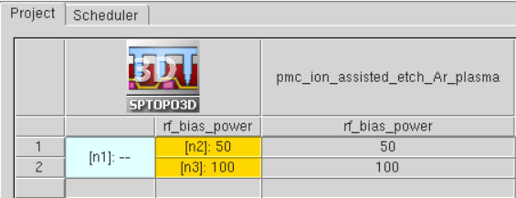

main menu
| module menu
| << previous section
| next section >>
main menu
| module menu
| << previous section
| next section >>
Sentaurus Topography 3D
9. Plasma Simulation and Link to PMC
9.1 Plasma Simulator and Modules
9.2 Plasma Model Setup
9.3 Plasma Simulation Results
9.4 Link to the PMC Model
Objectives
- To simulate reactor plasma with a plasma model using plasma equipment parameters as input.
- To bridge the gap between reactor parameters and PMC parameters.
- To link the plasma model output to the PMC surface reaction model.
9.1 Plasma Simulator and Modules
This section is dedicated to the setup and usage of the zero-dimensional reactor plasma simulator of Sentaurus Topography 3D. The plasma simulator is intended to facilitate the setup of PMC surface reaction models by providing crucial information about the gas species fluxes reaching the surface. Zero-dimensional (0D) also means that the geometric characteristics for the reactor are not considered in the solution as might be the case with more sophisticated and complex simulators.
The main focus of the plasma simulator is to obtain a solution relatively quickly, with a good estimation of the gas fluxes reaching the exposed surface of the PMC domain.
The ion energy and angular distribution (IEAD) functions of the incident gas species are calculated based on commonly used reactor parameters such as pressure, gas temperature, the applied power and RF bias, and the flows of various gas species. The IEAD functions can then be used directly in a PMC model with the define_species_distribution command. With this approach, it becomes easier for you to bridge the gap between the reactor (machine) parameters and the PMC gas species fluxes, which often are difficult to obtain experimentally or to guess.
Figure 1 presents the flow for setting up the plasma simulation and linking with a PMC simulation schematically, and it is the basis for the discussion in this section.
{kind=link}
Figure 1. Schematic flow for setting up a plasma simulation and linking it to a PMC simulation. (Click image for full-size view.)
There are two main modules of the plasma model:
- The global plasma bulk model is a volume-averaged discharge model based on the charge densities balance and electron temperature in the plasma bulk, which converges to a steady state.
- The plasma sheath model is a collisionless sheath model near an RF-bias electrode, based on the sheath transport model and the equivalent circuit model.
In plasma physics, the plasma bulk region is a quasi-neutral region that follows charge neutrality, and the plasma sheath region is a region close to the material surface (usually a few micrometers) where a positive space charge region is formed due to the depletion of electrons. A brief introduction to these two modules is given here.
To assist you in the first steps of setting up and using the plasma simulator with a PMC model, a Sentaurus Workbench project is provided in the Applications Library. The project is similar to the one discussed in Section 6.3 Example: PMC Ion-Assisted Etching. The main difference is that, instead of using an arbitrary ion angular distribution (IAD) function for argon ions, the IEAD function is now calculated by the plasma model (only for argon).

Figure 2. Sentaurus Workbench project for a plasma simulation linked to PMC ion-assisted etching.
To download the preprocessed script files, right-click the following link and choose Save Target As:
To execute the PMC simulation file in Sentaurus Topography 3D on the command line, enter:
> sptopo3d pp_pmc_ion_assisted_etch_Ar_plasma_t3d.cmd
9.2 Plasma Model Setup
This section presents details about how to set up the plasma model.
9.2.1 Plasma Reaction Model Definition
The first step of simulating plasma is to define a plasma model type for the bulk and sheath models. For the bulk model, only the global model type is available. For the sheath model, two model types are available: analytic and circuit. In this example, the circuit sheath model type is chosen, which uses an equivalent circuit to predict the sheath potential at the electrode. The commands for the type models are as follows:
define_plasma_model name=$plasma_model \ bulk_model_type=global sheath_model_type=circuit
After the plasma model definition, the species must be added to the plasma model with their species names, masses, and charges specified:
add_species plasma_model=$plasma_model name=Ar mass=39.948<amu> charge=0 add_species plasma_model=$plasma_model name=Ar* mass=39.948<amu> charge=0 add_species plasma_model=$plasma_model name=Ar+ mass=39.948<amu> charge=+1
To simulate the plasma reactions in the plasma, the plasma bulk reactions must also be added to the plasma model with their formulas, rate coefficients, and transferred energies defined. The expressions of the plasma bulk reactions follow the syntax rules as presented here:
<R1> = n1<P1> + n2<P2> + ...
or:
<R1> + <R2> = n1<P2> + n2<P2> + ...
where:
- <R1> and <R2> are species names of the reactants. The number of the reactants must be one or two.
- <P1> and <P2> are species names of the products. The number of the products is arbitrary.
- n1 and n2 are the stoichiometric coefficients of the reaction products.
- The left-hand side and the right-hand side of the expression are separated by an equal sign (=).
- The species name e- is reserved for electrons. The rest of the species should be defined by the add_species command.
The definition of the plasma bulk reactions used in this example is for an argon gas including dissociation, excitation, and neutralization reactions:
add_bulk_reaction plasma_model=$plasma_model name=r1 \ expression="Ar + e- = Ar* + e-" \ rate_coefficient_type=arrhenius \ a=6.033e-15 b=0.3287 c=12.08 energy_transfer=11.6<eV> add_bulk_reaction plasma_model=$plasma_model name=r2 \ expression="Ar + e- = Ar+ + e- + e-" \ rate_coefficient_type=arrhenius \ a=2.160e-14 b=0.6329 c=16.0627 energy_transfer=15.76<eV> add_bulk_reaction plasma_model=$plasma_model name=r3 \ expression="Ar* + e- = Ar+ + e- + e-" \ rate_coefficient_type=arrhenius \ a=1.698e-13 b=0.1072 c=4.4129 energy_transfer=4.43<eV> add_bulk_reaction plasma_model=$plasma_model name=r4 \ expression="Ar* + e- = Ar + e-" \ rate_coefficient_type=arrhenius \ a=3.969e-15 b=0.2894 c=0.7412 energy_transfer=-11.6<eV> add_bulk_reaction plasma_model=$plasma_model name=r5 \ expression="Ar* + Ar* = Ar+ + Ar + e-" \ rate_coefficient_type=arrhenius \ a=1.2e-15 b=0 c=0 energy_transfer=0<eV>
As a reference, the reaction rate coefficients of the plasma bulk reactions listed above are in the form of an Arrhenius law (rate_coefficient_type=arrhenius), which is illustrated as follows:
\[k_{r}(T_{e}) = a \html" " · ({T_{e}}/{T_{ref}})^{b} \html" " · e^{(- {c}/{T_{e}})} \html" " \text"," \html" " T_{ref} = 1eV\]
Instead of using the Arrhenius law form, a general Arrhenius expression can also be applied (with rate_coefficient_type=general_arrhenius):
\[k_{r}(T_{e}) = e^{(a + b\html" " ln(T_{e}) + {c}/{T_{e}} + {d}/{T^2_{e}} + {e}/{T^3_{e}})}\]
9.2.2 Plasma Reactor Configuration
Next, you need to set up the reactor and apply the defined plasma model to the reactor. Meanwhile, the reactor also includes other etch equipment–related parameters, including the plasma source type, effective chamber dimension, RF power, chamber pressure, and gas flow.
The effective chamber dimension (effective bulk radius, \(R_{bulk}\), and effective bulk height, \(L_{bulk}\)) can be calculated from their actual chamber dimensions, \(R\) and \(L\), respectively, with the following equations:
\[R_{bulk} = R · √h_{R} \]
\[L_{bulk} = L· √h_{L} \]
The effective dimensions \(R_{bulk}\) and \(L_{bulk}\) are NOT calculated automatically by the simulator. You might need to set them.
The scaling factors \(h_{R}\) and \(h_{L}\) depend on the mean free path \(λ\) of the ions:
\[h_{R} = 0.8 \html" " · (4 + {R}/{λ})^{-0.5}\]
\[h_{L} = 0.86 \html" " · (3 + {L}/{2λ})^{-0.5}\]
For more information about calculating the scaling factors (\(h_{R}\) and \(h_{L}\)), see the Sentaurus™ Topography 3D User Guide.
The reactor setup used in this example is suitable for solving both the bulk model and the sheath model. The command define_reactor assembles the reactor parameter values and combines them with the plasma model in the same way that the command define_etch_machine assembles a PMC model and the species distributions and properties. The setup used in this project is as follows:
define_reactor name=R plasma_model=$plasma_model \
type=icp \
radius=10<cm> \
height=3.0<cm> \
power=500<W> \
power_absorption_coefficient=0.2 \
gas_temperature=350<K> \
pressure=10<mTorr> \
rf_bias_power=@rf_bias_power@<W> \
rf_bias_frequency=13.56<MHz> \
inlet_gas_flow= {{Ar 200.0<sccm>}}
The total absorbed power \(P_{abs}\) is assumed to be proportional to the time average of the power \(P_{rf}\) applied to the reactor (specified by the power parameter):
\[P_{abs} = α <P_{rf}(t)>\]
where \(α\) is the power absorption coefficient (parameter power_absorption_coefficient).
9.2.3 Solvers for the Plasma Bulk and Sheath
In the previous steps, the plasma model was set up along with the corresponding reactor. All the necessary items for the plasma simulation setup are now ready to proceed with the plasma solution.
Before solving the model, the bulk and sheath solvers could be configured manually and separately. Solver definition is optional and the default configuration is applied if you do not do so explicitly (see the Sentaurus™ Topography 3D User Guide for the default values of the solver parameters).
The solver setup used in this project is as follows:
define_bulk_solver name=bs \ bulk_model_type=global \ stationary_state_tolerance=2.0e-13
define_sheath_solver name=ss \ sheath_model_type=circuit \ ied_solver=monte_carlo \ power_tolerance=1e-3
The tolerances and the ion energy distribution (IED) solver (ied_solver) defined for the sheath solver are the default values. The stationary_state_tolerance for the bulk solver is set intentionally to a very low value (1.0e-4 is the default) to force the solver to run more iterations before convergence in order to demonstrate the extraction of the bulk solution residuals in the next section.
The parameter ied_solver is used to select the method to compute the IED of the ions crossing the sheath layer. Two methods are available, analytic and monte_carlo, and they are only available when the circuit sheath type is selected in the define_plasma_model (sheath_model_type=circuit) command.
Some useful data can be extracted from the plasma simulation. Therefore, data extractions can be defined and they are applied during the solution to monitor the species densities and the overall convergence of the solution. Several quantities can be extracted. In the following example, plasma bulk reactions (reactions), species densities (state), electron temperature (state), and the ion energy distribution (energy_distribution) from the sheath are extracted:
define_extraction name=ex_bulk \
type=plasma \
bulk_model_type=global \
quantities={reactions state residuals} output_type=tdr\
file=n@node@_bulk_extractions.tdr
define_extraction name=ex_sheath \
type=plasma \
sheath_model_type=circuit \
quantities={energy_distribution} \
species_pattern= {*+} output_type=tdr \
file=n@node@_sheath_extractions.tdr
The glob syntax is the default for species_pattern. Here, the {*+} pattern matches all the positive ion species. For a complete list of all the quantities that can be extracted from the bulk and sheath solutions, see the Sentaurus™ Topography 3D User Guide, Chapter 6, for the command define_extraction for type=plasma. The extracted quantities are saved to separate TDR files for the bulk and sheath solutions, and it is also possible to save them in a CSV file by setting the parameter output_type=csv instead of the (default) output_type=tdr.
After the configuration of the solvers is finished and the extractions are defined, the last step is to start the solution with the solve_reactor command:
set plasma_results [solve_reactor name=ps reactor=R \
bulk_solver=bs sheath_solver=ss extractions={ex_bulk ex_sheath}]
The solve_reactor returns a nested list with the species fluxes, densities, and energies from the bulk and sheath solutions. The same information is also printed in the log file of the simulation (see Figure 3). The returned list can be converted to a Tcl array and then each quantity becomes accessible by its name as it is done for the Ar+ flux in this project:
puts $plasma_results array set plasma_results_array [join $plasma_results] set Ar_plus_flux $plasma_results_array(Ar+_flux)
{kind=link}
Figure 3. Log output for the plasma simulation. (Click image for full-size view.)
9.3 Plasma Simulation Results
This section discusses the results of the plasma simulation.
9.3.1 Visualization of Extracted Results From TDR File
The extracted results in the TDR files can be visualized in Sentaurus Visual. For example, it is common to plot the ion energy distributions for further analysis. The plot can be generated from the extracted plasma sheath results in the corresponding TDR file (see Figure 4).
{kind=link}
Figure 4. Energy distribution of Ar+ as extracted from the sheath solution. The bimodal distribution with two energy peaks at low and high energies of ions and the distribution spread is wider for higher bias, as expected theoretically and is observed experimentally. For relatively low RF bias frequencies, the ions cross the sheath layer in a small fraction of an RF cycle and they can respond to the instantaneous sheath voltage. Consequently, their final energies depend strongly on the phase of the RF signal at which they enter the sheath. The result is their broad and bimodal IEDs. The two peaks in the IEDs correspond to the minimum and maximum sheath drops, that is, where the voltage is varying most slowly. (Click image for full-size view.)
For more complicated plasma models with many reactions of various species, it is also useful to monitor the convergence of the bulk solution by plotting the species residuals as a function of time.
9.4 Link to the PMC Model
The output of the plasma solution and mainly the IEAD functions can be used directly in a PMC surface reaction model by calling the plasma solution in the define_species_distribution command. This is demonstrated in the following example where also the flux of XeF2 is set to be a function of the Ar+ flux calculated from the plasma simulation:
define_species_distribution name=my_distr species=Ar+ type=plasma solution=ps set XeF2_flux [expr $Ar_plus_flux*10.0] define_species_distribution name=my_distr species=XeF2 exponent=1.0 \ flux=$XeF2_flux energy_min=0.0 energy_max=0.3
The IEADFs of Ar+ that are calculated by the plasma simulator contain valuable information about the energy distribution of the ions. This information can be leveraged by rendering some PMC model parameters energy dependent. In the example that follows, the sputtering yields for the materials of the PMC model are energy dependent by setting an energy threshold:
define_yield name=my_yield species=Ar+ material=Silicon \ yield_at_zero=1.2 yield_max=2.4 theta_max=60 threshold_energy=50 define_yield name=my_yield species=Ar+ material=SiFx \ yield_at_zero=1.0 yield_max=1.05 theta_max=50 threshold_energy=20 define_yield name=my_yield species=Ar+ material=Photoresist \ yield_at_zero=1.0 yield_max=1.5 theta_max=50 threshold_energy=10
The threshold energy is used in the prefactor that scales the (angle-dependent) yield function \(γ(θ)\) for each material. As a result, by varying the RF bias power in the reactor definition (rf_bias_power), it is possible to give more or less energy to the ions for sputtering the materials. In cases where the ion energy is below the energy threshold \(E_{th}\) for a material, no sputtering occurs. The energy dependence can be used elsewhere as well for rendering the reaction probabilities dependent on the species energy in general (not only for ions). The yield scaling prefactor varies with the square root of the ion incident energy when the parameter threshold_energy is used in the yield definition:
\[γ(E,θ) = (√E - √E_{th} ) \html" " · γ(θ)\]
In the Sentaurus Workbench project treated here, the parameter @rf_bias_power@ is used to vary the RF bias power applied in the plasma reactor. The comparison of the resulting etched structures between the lower (50 W) and higher (100 W) RF bias powers shows clearly the effect on the sputtering rates with more energetic Ar+ ions yielding deeper etch depths at 100 W (see Figure 5).
{kind=link}
Figure 5. Comparison of etch depth in structures for 50 W and 100 W of RF bias power. Higher RF bias power generates ions with higher energies that can sputter more efficiently according to the PMC model used here. The thin layer of SiFx (magenta) is clearly visible in the TDR structures saved in the GC format. (Click image for full-size view.)
main menu | module menu | << previous section | next section >>
Copyright © 2022 Synopsys, Inc. All rights reserved.